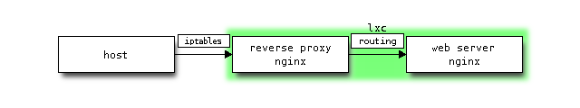

quick wiki configuration
Now you have container to store your content. So let us setup sphinx so that we can deploy our contents onto it.
installation
Fist, install make command & pip.
$ sudo apt-get install build-essential
$ sudo apt-get install python-setuptools
$ sudo easy_install pip
And then sphinx, extension & fonts.
$ sudo apt-get install python-sphinx
$ sudo pip install sphinxcontrib-blockdiag sphinxcontrib-nwdiag sphinxcontrib-seqdiag sphinxcontrib-actdiag
$ sudo apt-get install python-matplotlib
$ sudo apt-get install ttf-dejavu
configuration
Configure project configuration file to reflect extension.
#extensions = []
extensions = ['sphinxcontrib.blockdiag',
'sphinxcontrib.nwdiag',
'sphinxcontrib.seqdiag',
'sphinxcontrib.actdiag']
blockdiag_fontpath = '/usr/share/fonts/truetype/ttf-dejavu/DejaVuSansMono.ttf'
nwdiag_fontpath = '/usr/share/fonts/truetype/ttf-dejavu/DejaVuSansMono.ttf'
seqdiag_fontpath = '/usr/share/fonts/truetype/ttf-dejavu/DejaVuSansMono.ttf'
actdiag_fontpath = '/usr/share/fonts/truetype/ttf-dejavu/DejaVuSansMono.ttf'
automatic build
Ok, now let us configure system to build html automatically upon any modification under source directory.
Fist install inotify-tools to monitor file system changes.
$ sudo apt-get install inotify-tools
Create a script to monitor changes and launch sphinx-build upon detection. Save this script as build.sh under $HOME/script directory.
#!/usr/bin/env bash
ROOT=/home/ubuntu/wiki
WATCH=source
cd $ROOT
while inotifywait -r -e create,modify,delete $WATCH; do
sphinx-build -b html -d build/doctrees source build/html
done
So as to launch this script upon system boot, create such a wrapper script as following under /etc/profile.d directory.
#!/usr/bin/env bash
nohup /home/ubuntu/script/build.sh 1> /dev/null 2>&1 &
static web server in lxc
Let us create web site in lxc environment. That is, with rough design as follows.
design
- network

- traffic flow

web server
Create an instance of ubuntu under the name of “web”.
$ sudo lxc-create -n web -t ubuntu
$ sudo lxc-start -n web -d
$ ssh -l ubuntu `cut -d " " -f3 /var/lib/misc/dnsmasq.lxcbr0.leases`
Let us configure timezone to JST and network interface to static one.
$ sudo ln -sf /usr/share/zoneinfo/Asia/Tokyo /etc/localtime
$ tail -8 /etc/network/interfaces
auto eth0
#iface eth0 inet dhcp
iface eth0 inet static
address 10.0.3.21
network 10.0.3.0
netmask 255.255.255.0
broadcast 10.0.3.255
gateway 10.0.3.1
nginx
Now install and configure nginx as container of static content.
$ sudo apt-get install nginx
Configuration files related to nginx are deployed under /etc/nginx directory.
$ tree
.
├── conf.d
├── fastcgi_params
├── koi-utf
├── koi-win
├── mime.types
├── naxsi_core.rules
├── naxsi.rules
├── nginx.conf
├── proxy_params
├── scgi_params
├── sites-available
│ └── default
├── sites-enabled
│ └── default -> /etc/nginx/sites-available/default
├── uwsgi_params
└── win-utf
Decrease number of worker process.
$ diff nginx.conf nginx.conf.org
2c2
< worker_processes 1;
---
> worker_processes 4;
(It may not be necessary though,) configure nginx so as to start upon boot time.
$ update-rc.d nginx defaults
virtual host
Create a virtual host configuration file, say, “wiki” under /etc/nginx/sites-available directory.
server {
listen 80;
access_log /home/ubuntu/wiki/logs/access.log;
error_log /home/ubuntu/wiki/logs/error.log debug;
location / {
root /home/ubuntu/wiki/build/html/;
index index.html;
}
}
Make a symbolic link from under /etc/nginx/sites-enabled directory. And remove default configuration if not necessary.
$ sudo ln -s /etc/nginx/sites-available/wiki .
$ rm -i default
search for package
You may encounter such a situation that some shared libraries are stripped when you debug core file. For example,
(gdb) info shared
From To Syms Read Shared Object Library
0xb778f430 0xb77a6054 Yes (*) /lib/i386-linux-gnu/libncurses.so.5
0xb75ef350 0xb7728f4e Yes /lib/i386-linux-gnu/libc.so.6
0xb75d2ad0 0xb75d3a9c Yes /lib/i386-linux-gnu/libdl.so.2
0xb75b87d0 0xb75c2c24 Yes (*) /lib/i386-linux-gnu/libtinfo.so.5
0xb77c9830 0xb77e1e7c Yes /lib/ld-linux.so.2
(*): Shared library is missing debugging information.
You would like to search for package, which relevant shared object is included. With library, which contains symbol table and you can examine more closely core file.
install
You need to have apt-file command for searching packages. Let’s install apt-file, as it is not installed by default.
$ sudo apt-get install apt-file
update cache
So as to search for packages, you need to have local cache. Let’s download cache from repository and update cache.
$ apt-file update
search & install
Now you are ready for searching packages. Take sample quoted above and search for “libncurses.so.5”.
$ apt-file search libncurses.so.5
lib64ncurses5: /lib64/libncurses.so.5
lib64ncurses5: /lib64/libncurses.so.5.9
libncurses5: /lib/i386-linux-gnu/libncurses.so.5
libncurses5: /lib/i386-linux-gnu/libncurses.so.5.9
libncurses5-dbg: /usr/lib/debug/lib/i386-linux-gnu/libncurses.so.5.9
libncurses5-dbg: /usr/lib/debug/lib64/libncurses.so.5.9
libncurses5-dbg: /usr/lib/debug/libncurses.so.5
libncurses5-dbg: /usr/lib/debug/libncurses.so.5.9
libncurses5-dbg: /usr/lib/debug/usr/libx32/libncurses.so.5.9
libx32ncurses5: /usr/libx32/libncurses.so.5
libx32ncurses5: /usr/libx32/libncurses.so.5.9
libncurses5-dbg must be our target package. Ok, let’s install it.
$ sudo apt-get install libncurses5-dbg
Now you can see stacks with function names and arguments. And checking status of shared libraries, you will confirm libraries not stripped.
(gdb) info shared
From To Syms Read Shared Object Library
0xb778f430 0xb77a6054 Yes /lib/i386-linux-gnu/libncurses.so.5
0xb75ef350 0xb7728f4e Yes /lib/i386-linux-gnu/libc.so.6
0xb75d2ad0 0xb75d3a9c Yes /lib/i386-linux-gnu/libdl.so.2
0xb75b87d0 0xb75c2c24 Yes /lib/i386-linux-gnu/libtinfo.so.5
0xb77c9830 0xb77e1e7c Yes /lib/ld-linux.so.2